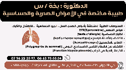

تشخيص وعلاج أمراض الصدر
متابعة الربو، الانسداد الرئوي المزمن (BPCO)، السل، التليف وأورام الجهاز التنفسي.
تشخيص فوري بالأشعة الرقمية، فحص كفاءة الرئة EFR، وتجهيزات حديثة لعلاج الربو والحساسية لجميع الأعمار.
متابعة الربو، الانسداد الرئوي المزمن (BPCO)، السل، التليف وأورام الجهاز التنفسي.
تصوير إشعاعي عالي الدقة (Radiographie numérique) للتشخيص الفوري لصحة الرئتين والقفص الصدري.
فحص دقيق لكفاءة التنفس ووظائف الرئة للمرضى والرياضيين والمدخنين.
تحديد مسببات الحساسية الصدرية، الأنفية والغذائية عبر Prick Tests السريعة والآمنة.
Polygraphie du sommeil لتشخيص أسباب الشخير ومتلازمة انقطاع النفس النومي.
رعاية طبية لطيفة وفحوصات خاصة للأطفال المصابين بالسعال المتكرر والحساسية.
نوفر أحدث الأجهزة الطبية لتشخيص سريع ودقيق دون الحاجة للتنقل بين مخابر متعددة:
تصوير إشعاعي رقمي عالي الدقة للقفص الصدري والرئتين يُمكّن من كشف الالتهابات والسل وأورام الصدر فوراً أثناء الاستشارة.
استفسار عن أشعة الصدرجهاز قياس التنفس الإلكتروني لتقييم حجم الهواء وسرعة التدفق وتشخيص الربو، الانسداد الرئوي المزمن، وتقييم كفاءة الجهاز التنفسي.
استفسار عن فحص EFRاختبارات جلدية سريعة ودقيقة لتحديد مسببات الحساسية التنفسية والغذائية والجلدية كخطوة أساسية لوضع خطة العلاج المناعي.
استفسار عن فحص الحساسيةجهاز رقمي محمول يُسجل حركات التنفس ومستوى الأكسجين أثناء النوم في المنزل لتشخيص انقطاع التنفس والشخير بدقة وراحة تامة.
استفسار عن تخطيط النومتقع عيادتنا في موقع مركزي بـ وسط مدينة قالمة (حي 19 جوان، خلف مستشفى الحكيم عقبي)، وتستقبل يومياً المرضى من مختلف دوائر الولاية والولايات المجاورة لتوفير الفحوصات الصدرية المتخصصة:
املأ المعلومات التالية، وسيتواصل معكم فريق الاستقبال لتأكيد وقت الزيارة:
0796 22 25 97
0663 75 55 84
السبت إلى الخميس: 08:00 - 16:00

طبيبة أخصائية في الأمراض الصدرية والحساسية